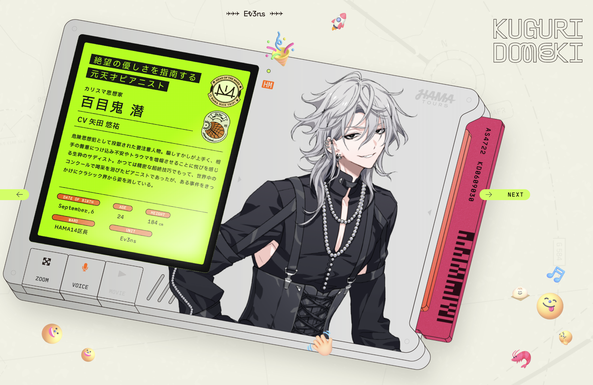
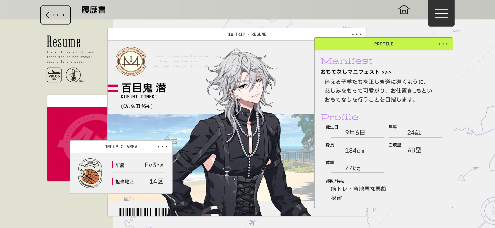
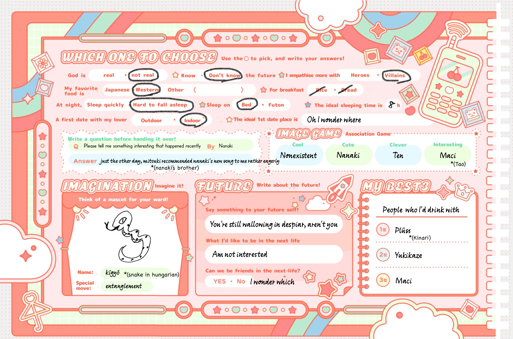

A person of note incarcerated for being a dangerous criminal. He’s a self-described sadist who enjoys causing chaos and agitating people. Once an acclaimed pianist who was lauded for his precise technique, Kuguri has since disappeared from the world of classical music following a certain incident.

He aims to guide lost lambs onto the correct path, cherishing them with tender love and care, as well as punishment… or rather, hospitality.
| Date of Birth | September 6th (2031) |
|---|---|
| Age | 24 |
| Height | 184cm (6’0”) |
| Weight | 77kg (169.7lbs) |
| Blood Type | AB |
| Hobbies | Muscle Training, Malicious Pranking |
| Special Skills | Secret |
HBD Kuguri! Here's his profile TL. Where do you think he goes on days off?👀
— Chi (@Chinari_1010) September 6, 2024
CH3 is up to B17 and will be fully posted soon. Taking a small vacay this weekend. 🔗below
Raising a glass to @lore_likes_cats for the edit and Aster, Summer, and Jes for PR as always.#18TLip pic.twitter.com/bvf8PBeYX5
